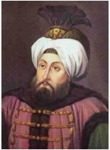

Hayatının yaklaşık kırk yılını sarayda bir dairede mahpus olarak geçiren ve Osmanlı tarihinin en uzun veliahtlık süresine sahip olan Sultan II. Süleyman, Kasım 1687’de sonunda Osmanlı padişahı olduğu zaman kendisine bunu tebliğe gelenlerin söylediklerine inanmamış ve tahta götürülürken öldürülmeye götürüldüğünü sanıp çevresindekilere uzun zaman direnmiştir.
II. Ahmet de altı yaşında sarayda bir odaya kapatılmış, bu durumda 43 yıl kaldıktan sonra 49 yaşında tahta çıkmıştı. Asabi bir insandı, iyi eğitilmemişti. Tahta çıktığı zaman cülus duası edilirken vezirlerindeki hoşnutsuzluğu hissedip bağırmaya başladığı kaydedilir: “Bre Allah’tan kokmaz, sakalından utanmaz adamlar! Beni bu hale getirinceye kadar hapsettiniz, şimdi saltanatıma burun kıvırmak haddinize mi!”

II. Süleyman